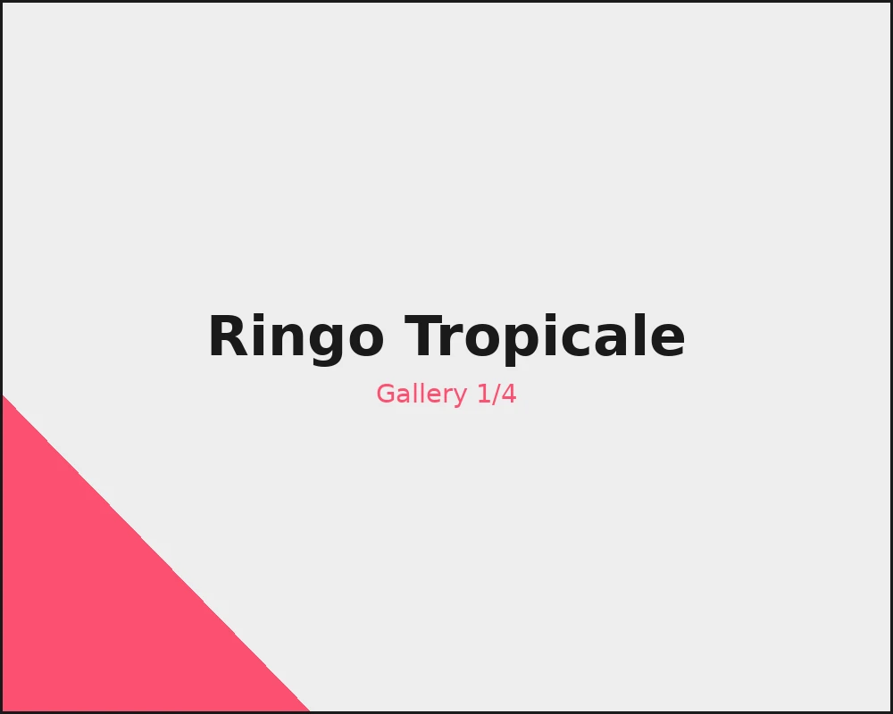

Ringo Tropicale
Graphic Design
On the request of the Italian multinational Barilla, a new food product with innovative and sustainable packaging has been conceived.
Ringo Tropicale is a limited edition that combines the goodness of Ringo biscuits with the freshness of summer.
The key concept of this project is sharing. The segmented opening encourages group consumption, allowing individuals to access the desired quantity of the product.
Mini vanilla-flavoured biscuits, featuring the graphics of the compass rose; and cocoa-flavoured ones, marked by a tropical island.
Both versions are coated with icing and filled with fruit cream.
GalleryGalleryGalleryGalleryGallery
